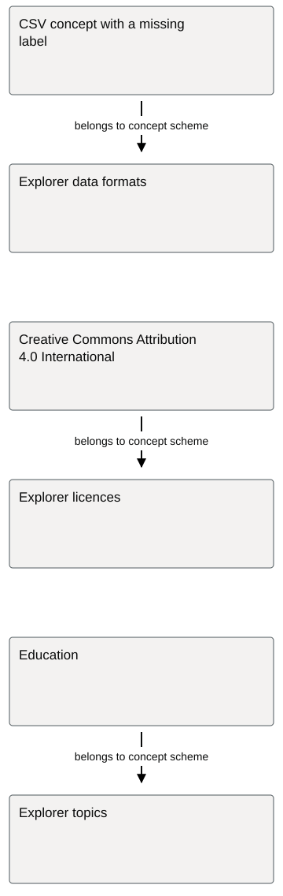

Trace a missing label through validation and review
Retained metadata extension. Its graph is supplied as RDF or geospatial metadata; Markdown-core conformance is not asserted.
Question
Why can CSV still appear in Reader when its preferred label is missing, which constraint fails, and what does the review evidence establish?
Answer from the retained evidence
The CSV identifier and its format-scheme membership remain in the graph. A navigation label does not establish that skos:prefLabel exists in the source. The retained SHACL result does not conform: one minimum-count violation concerns the CSV term's skos:prefLabel. Inspect the review record alongside that finding; the fixture is an intentional negative control.
Intentional negative control: source validation does not conform.
Open csv, inspect the validation finding, then read the linked review evidence. Preserve the negative result when handing this bundle to an AI.
Complete retained graph
6 records; 3 directed assertions.

Every arrow is a retained assertion. The complete records and assertions are in the evidence file.
- Inspect CSV concept with a missing label in Reader
- Inspect Explorer data formats in Reader
- Inspect Creative Commons Attribution 4.0 International in Reader
- Inspect Explorer licences in Reader
- Inspect Education in Reader
- Inspect Explorer topics in Reader
Limits of this answer
- The missing preferred label is deliberately retained to exercise validation.
- A visible navigation label does not resolve the source finding.
- This fixture must continue to report its non-conforming validation result.
Inspect or use the evidence
Complete worked-question evidence · Context for an AI client · Replay the record journeys · Authored question
- data/manifest.json —
e446cc13bdbdee04f9626aeca013f14007f867e04cd71802bcb5d384a7d16d53 - data/ontology.json —
3bcc84d35411cd281790e39e2409ed0a7353c25071faccd7c5489798c219a716 - data/records.json —
f87c8d6add67bfcb097982a41eb472aebda7a22d4305607bd051d0c03df2458f - data/relationships.json —
45927dffee764964a51b90031eaf950e73e052d88b18a43beaab17d906a07beb - data/review.json —
29f725ff3c8f13c08b837d9001105cfbdd6c7944929f61b38741163ee079cf44 - data/shacl.json —
ef739c4e0bd70c4080562f331d4bef12dd56b4ef3f22e661b4b3800395c98484 - okf-explorer.json —
8887c1aa22f6d828665a9d0d60303c27611f60af8a4845a6a39e7d41b8179717 - source.nt —
6f257a37d72ed401590d8c67f2747d7a33d57070698380f2d4f4d98eed69c4be